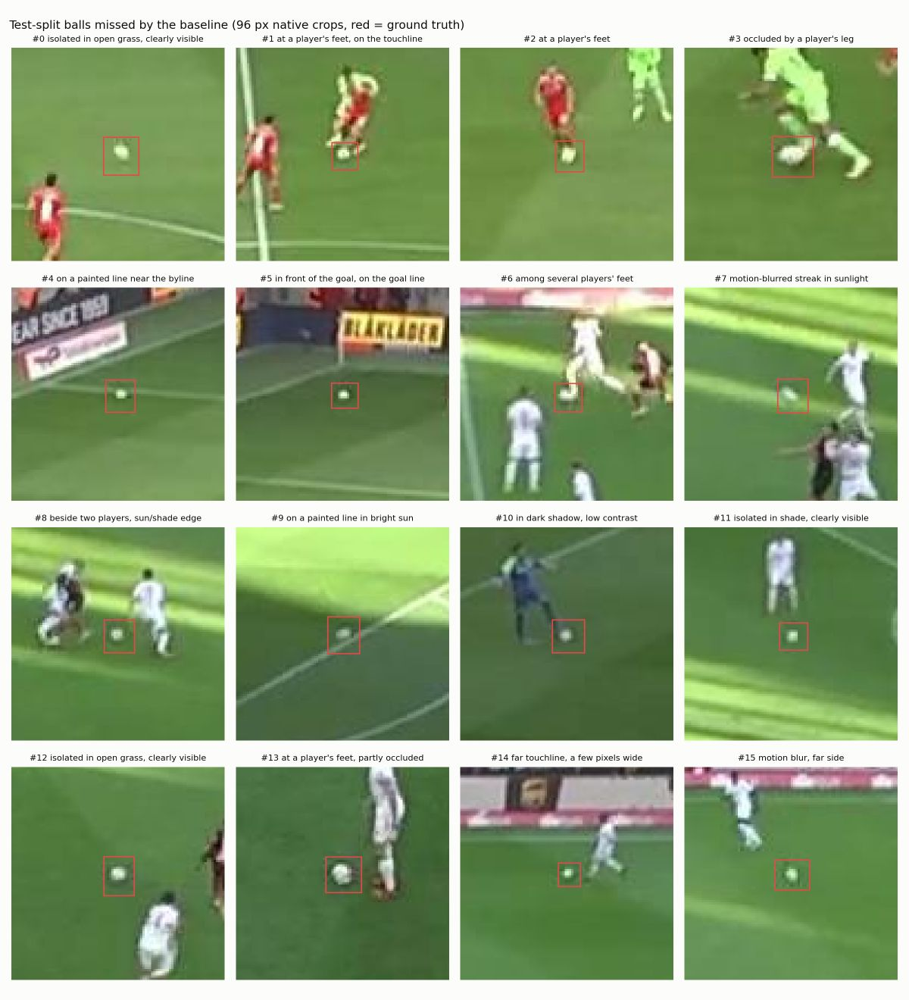

Every run is YOLO11s for 100 epochs with seed 0 and changes one thing against the baseline. Settings are chosen on the validation split and reported once on test.
Phase 0 · Data
372 frames, re-split by match
The frames come from wide tactical-camera footage of Bundesliga matches, annotated with four classes. Every image is native 1920×1080, so higher-resolution training has real detail to recover.
The published split shared clips between train and test: all 19 test clips also appeared in training, which inflates test scores. Every source video now sits in exactly one split, and no frame is shared.
Split by video226 / 74 / 72Train / val / test images from 10 / 2 / 3 videos
Balls in test58Few enough that noise has to be measured
Ball to players1 : 20A ball in 87 % of frames, but one to about twenty players
Class
Instances
Median width at 640
10th–90th percentile
Frames containing it
player
7,428
8.0 px
5.3 – 12.7 px
372 / 372
referee
863
7.0 px
4.9 – 14.7 px
371 / 372
ball
327
3.7 px
2.8 – 4.9 px
325 / 372
goalkeeper
288
7.7 px
6.0 – 10.3 px
271 / 372
Phase 1 · Interventions
What moves ball detection
The baseline and the two smallest effects were repeated with three seeds to measure the noise any gain has to beat.
InterventionBaseline or controlBaseline ± 1 sd over 3 seeds
Ball mAP50-95 on the test split. Hover or focus a row for the validation score, all-class mAP and speed.
Resolution
Works
Training at 960 and 1280 lifts ball mAP50-95 from 0.110 to 0.242 and 0.298, with validation agreeing (0.117 → 0.321 → 0.390). At 1280 the typical ball grows to about 7.4 px, close to one grid cell. The T4 ran out of memory at batch 16, so the 1280 run used batch 8, recorded as a second variable.
Sliced inference
Overlaps
Tiling each frame into 960 px slices lifts the 640 model from 0.113 to 0.188 at about a ninth of the speed. On the 1280 model it hurts on validation (0.381 → 0.366). Both fix the same shortage of pixels on the ball, so the gains do not stack.
Scale jitter, class weights
Not established
With one seed, narrowing scale jitter from 0.5 to 0.2 and up-weighting rare classes each looked like +0.02 on test. Repeated with three seeds, the gains shrink to about +0.007 on test and +0.008 and 0.000 on validation, against a seed-to-seed spread of 0.009 to 0.014. Adding motion blur on top of scale 0.2 gives nothing for the ball and lowers all-class mAP from 0.502 to 0.475.
P2 head
Explained
A stride-4 head scored worse (0.045). No YOLO11 P2 config ships with the library, so the head was built from the stock config and only 297 of 593 weight tensors carried over from pretraining. A control that re-initialises the same layers of the stock model scores 0.060: the loss comes from discarded pretraining, not the finer head.
The cost of each fix
Ball mAP50-95 on test against end-to-end inference speed, batch 1 on a Tesla T4, log scale. Up and to the right is better.
Show every number
Run
Change
Ball test
Ball val
Ball recall
All classes
FPS
Batch
Train min
Add-on · No new training
Slice only where the ball might be
Full SAHI re-runs the model on every tile of the frame, and most tiles hold no ball. Here the 640 model first scans the whole frame at a very low threshold; only the few most ball-like spots get a second, sharper look, and their ball boxes are merged with the full-frame ones. Crop size and the number of crops were chosen on validation (– px crops, top – candidates) and reported once on test.
Full frame–1 pass · – ms per frame
Ball-region slices–– passes on average · – ms per frame
Full SAHI–7 passes · – ms per frame
Most of the gain, a third of the cost
Works
Ball-region slicing keeps – of SAHI's gain over the full frame at – the full frame's time, against – for SAHI. It finds as many balls as SAHI (recall – against –); what it gives up is how tightly and confidently they are boxed.
Crop size matters
Lesson
A 640 px crop shows the ball at native resolution, three times larger than any ball the 640 model saw in training. On validation it still helped, but on test it lowered ball mAP to – while finding more balls: the model finds them but boxes them badly. 960 px crops, SAHI's slice size, halve the scale gap and win on validation.
Ball mAP50-95 on the 72 test frames, all from the 640 baseline weights, all methods run on the same laptop CPU and scored by the same evaluator as the table above, so the times compare with each other but not with the T4 numbers.
Failure gallery
Where the ball goes missing
Test-split balls the baseline misses at confidence 0.25, cropped at native resolution. Some are hidden by legs or crowded feet, some are blurred or sit on a painted line. Several are isolated balls in open grass, clearly visible at 1920 px and lost only when the frame is shrunk to 640.

Red box: the labelled ball. Captions were written after inspecting each crop.